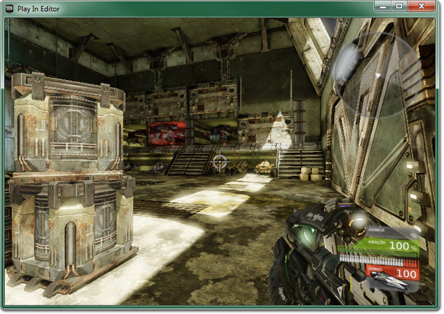
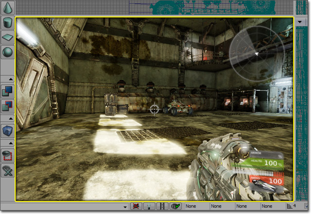
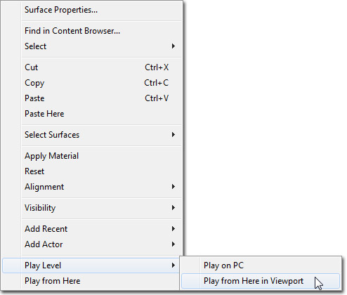
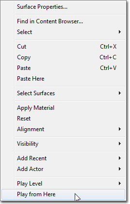
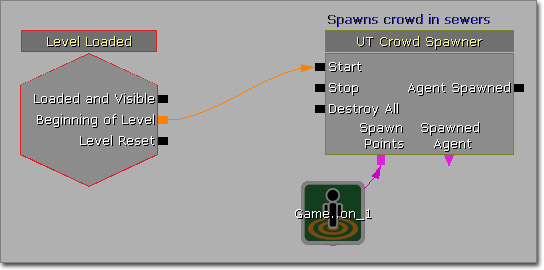

UDN
Search public documentation:
PlayInEditorCH
English Translation
日本語訳
한국어
Interested in the Unreal Engine?
Visit the Unreal Technology site.
Looking for jobs and company info?
Check out the Epic games site.
Questions about support via UDN?
Contact the UDN Staff
日本語訳
한국어
Interested in the Unreal Engine?
Visit the Unreal Technology site.
Looking for jobs and company info?
Check out the Epic games site.
Questions about support via UDN?
Contact the UDN Staff
在编辑器中播放
概述
在编辑器窗口中播放

可以通过两种方式初始化这个 PIE 方法：- 从关卡编辑器的 Play（播放） 菜单中选择 In Editor（在编辑器中） 选项。
- 在主要编辑器工具栏中点击 按钮。
?spectator 赋给 PIE 游戏的 URL，强制播放器以观看模式启动。
进一步讲，通过编辑器 .ini 设置 InEditorGameURLOptions 指定的字符串将会被附加到 PIE 游戏的 URL 上。
Play In Editor Viewport（在编辑器视窗中播放）

初始化这种 PIE 方法：- 在视窗工具栏中点击 按钮。
?spectator 赋给 PIE 游戏的 URL，强制播放器以观看模式启动。
进一步讲，通过编辑器 .ini 设置 InEditorGameURLOptions 指定的字符串将会被附加到 PIE 游戏的 URL 上。
Play From Here(从这里播放)
- 在透视视图中右击，然后通过关联菜单选择 Play Level（播放关卡） > Play from Here in Viewport（从视窗中这里开始播放） 。

- 在透视视图中右击，然后通过关联菜单选择 Play from Here（从这里开始播放） 。

这些启动 PIE 会话的方法会将一个传送带 actor 放置在地图中右击的位置，然后将这个传动带的名称传递给 PIE 游戏。GameInfo 的默认实现将会在传送带的位置处产生一个玩家（再次说明，您的游戏类型可以重写这个行为）。 在初始化 PIE 会话时按住 Ctrl 会将?spectator 赋给 PIE 游戏的 URL，强制播放器以观看模式启动。
进一步讲，通过编辑器 .ini 设置 InEditorGameURLOptions 指定的字符串将会被附加到 PIE 游戏的 URL 上。
使用 PIE
放置注释
当在 PIE 中，您可以在您的当前位置放置 Note Actors，从而帮助您记住一些区域，以便返回编辑器中在进行工作。您可以使用dn 控制台命令（Drop Note 的控制台命令），然后在命令后面添加您喜爱分配给该注释的字符串来完成。
例如：
dn fix lighting here将会在您的玩家的当前位置和旋转角度处创建一个 Note Actor，显示文本 fix lighting here（在这里固定光照） 。

关闭 PIE
当用户在 PIE 窗口中点击 Escape 键时（或者在 PIE 控制台中输入quit ），将会关闭 PIE 窗口。
PIE Vs. Standalone（独立运行平台）
垃圾回收
当设置 GIsEditor 为真时，垃圾回收是基于旧的序列化方法进行的，而不是基于新的实时 GC 方法。请参照垃圾回收文档获得关于这个差异的更多信息。异步加载、关卡动态载入
PIE 不能处理关卡动态载入。它会将所有的子关卡加载到内存中。 然而，贴图动态载入可以在 PIE 执行。加载标志
用于详细说明仅在编辑器中加载的组件和其它对象的加载标志和函数 (RF_LoadForClient, NeedsLoadForClient()) 的行为是不同的。因为 GIsEditor 为真，所以不同的组件或许在 PIE 世界中但是却不在独立运行的世界中。Kismet
Kismet 有一个设置用于仅禁用针对 PIE 的连接。 在战争机器中使用这个功能来限制将玩家传送到关卡启动处（由于在战争机器中在 P 个地图之间进行动态载入时，不是任何东西都需要使用 PlayerStart actor，所以使用了传送功能）。传送动作会与 Play From Here（从这里播放）功能发生冲突，所以在 PIE 中禁用了传送动作（橘黄色的链接颜色）。
在战争机器中使用这个功能来限制将玩家传送到关卡启动处（由于在战争机器中在 P 个地图之间进行动态载入时，不是任何东西都需要使用 PlayerStart actor，所以使用了传送功能）。传送动作会与 Play From Here（从这里播放）功能发生冲突，所以在 PIE 中禁用了传送动作（橘黄色的链接颜色）。
